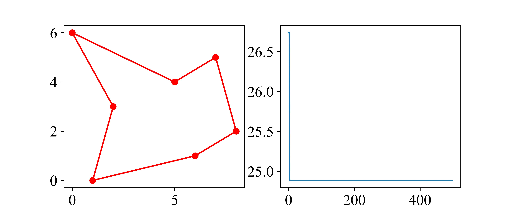

实验：用遗传算法求解旅行商问题
背景
生物种群的进化与基因的变异、有性生殖中的交叉互换、环境的自然选择相关。受此启发，人们在使用计算机进行模拟研究时，发明了遗传算法（Genetic Algorithm，GA）。算法的一般思路是：给定初始的若干方案，将其称为种群；在种群中进行方案的变化，即变异；在种群中模拟方案之间的交互，即交叉；根据某个特征挑选出符合要求的方案，进入下一轮迭代，即自然选择。这样一代一代不断繁衍进化，最后收敛到一群最适应环境的个体，从而求得问题的优质解。
算法、时间复杂度与NP完全问题
旅行商问题在描述上是相当简单的。商人带着货物在不同城市间兜售，给定一系列这些城市的点的坐标\((x, y)\)，我们期望找到一条路径，使得商人在经过所有城市的同时，走过的路程小于给定的值。
🍈旅行商问题是一个NP完全问题。
在设计程序时，我们的算法应当在我们当前的计算能力上是可接受的。例如，根据行列式的定义，我们有
通过这个定义来计算某个行列式的值时，计算机至少要做\(n!(n-1)\)次乘法。那么，当n=25时，这个数是\(372269041039943663616000000\)，大约是\(3.7×10^{26}\)。而根据公开的数据，截止到2022年6月，世界上最快的计算机每秒浮点运算数仅有\(1.1×10^{18}\)。换言之，计算这样一个行列式需要当前世界上最快的超级计算机计算10.6年。这显然是不能接受的。
因此，我们十分关注程序的时间复杂度，这个指标能够反映我们求解的问题规模扩大时，所需要的时间增长的速度情况。我们以之前所了解过的斐波那契数列作为案例，来研究一下算法对于优化时间复杂度的重要作用。
斐波那契数列
我们之前采用的方法是递归，由于在\(n\)充分大时，每一次的递归都需要计算\(n-1\)和\(n-2\)时的值，而这两个值也是通过递归实现的，因此递归的算法时间复杂度为\(O(2^n)\)。现在，我们对这个算法做一点改动，使用循环的办法，用三个变量来保存我们已经计算的值。
def fib(n):
if n == 1 or n == 2:
return 1
else:
f1, f2, f3 = 1, 1, 0
for i in range(3, n+1):
f3 = f1 + f2
f1 = f2
f2 = f3
return f3
好了，现在对于任意输入充分大的n，我们都只需要进行n次循环（事实上是n-2次，但在n充分大时我们直接认定为n），时间复杂度被我们降低到\(O(n)\)。
时间复杂度为\(O(n)\)的算法意味着随着求解规模的增长，我们所耗费的时间也是线性增长的。而事实上，根据矩阵的运算，我们知道
于是根据递推，我们有
现在的难点就在于计算某个矩阵的n次方。我们将n看作一个二进制数，从最低位开始，如果该位是1，则进行自乘操作，反之则不进行任何操作。这样，我们要计算的次数事实上是由这个二进制数中1的个数来决定的，因此，我们的时间复杂度减小到\(O(\log_2 n)\)。
最后，我们来细细观察一下这个要自乘的矩阵。根据矩阵特征值的定义\(|A-\lambda E|=0\)，我们有
于是其特征值为\(\lambda _{1,2}=\frac{1\pm \sqrt[]{5} }{2}\)，根据矩阵相随对角化原则，存在可逆矩阵\(P\)和对角矩阵\(\Lambda\)，使得
于是\(A^n=P\Lambda ^n P^{-1}\)。而根据特征值，我们很容易找到这样的矩阵
于是我们立刻可以给出\(f(n)\)的通项公式
好了，现在不论输入什么值，我们都只需要一步得出答案，我们认为这个通项公式带给我们的时间复杂度是\(O(1)\)。
一般而言，我们认为计算机只能解决具有像\(O(1)\)、\(O(n^2)\)、\(O(\log n)\)这样的可以用多项式来表示的时间复杂度的问题，而对于\(O(2^n)\)、\(O(n!)\)这样的问题其规模往往已经达到了计算机无法解决的程度。我们把所有能在多项式时间内解决的问题叫做P类问题，把不能在多项式时间内解决的问题叫做NP类问题。
NP类问题的求解与验证
NP类问题一般可以分为两方面，即问题的解决与答案的验证。例如，“找到一个公式，计算自然数\(n\)之后的第一个质数”这个问题当前来看是无法在多项式时间内得到解决的。但是，如果某人给出了一个公式，我们显然是可以在多项式时间内验证它是否正确，只需要确定\(n\)的值，然后枚举即可。
| 问题类型 | 能否在多项式时间内求解 | 能否在多项式时间内验证 |
|---|---|---|
| P | 能 | 能 |
| NP | 未知 | 能 |
| NP-C | 未知 | 能 |
而NP-C类问题是一种特殊的NP问题，任意NP问题都可以被约化成它；因此，如果我们解决了NP-C类问题，我们就能解决一切的NP问题。
但很遗憾，NP问题能否在多项式时间内有解，目前来看仍是不明确的。就像我们最开始介绍的旅行商问题一样，也许我们随机选择一条路线，恰好总距离就小于给定的值；但是，或许我们的运气太差，差到必须要通过枚举才能最终猜出来这条路线呢？使用枚举的方法，时间复杂度就是\(O((n-1)!)\)了，远远超乎了我们的想象。但是，一旦有人为我们提供某条路径，我们显然是可以在多项式时间内完成验证，知道它的总路程是否是小于给定值的。也就是说，我们能在多项式时间内验证问题的解是否正确，但我们仍不清楚我们是否能找到一个算法，能在多项式时间内解决这个问题。
如果回答是能，那么NP类问题事实上就成为了P类问题。也就是说，当我们提出了一个在多项式时间内能够验证问题的方法时，我们就一定能够在多项式时间内解决它。
这就是著名的P=NP？问题。如果P=NP，那么很大程度上能不能解决问题，事实上就变成了能不能提出问题——因为绝大多数问题都能在多项式时间内得到验证。
如果P类问题等于NP类问题，那么整个当前的信息安全体系将受到巨大冲击。在选修教材《密码学与信息安全》中我们将再次提到这一点。
输入输出样例
输入共8行，每行3个数字，用空格隔开。每一行第一个数字为城市序号；第二个数字为城市在坐标平面上的\(x\)坐标，第三个数字为\(y\)坐标。最后一个数字为给定的某个值，路线长需要小于这个值。
输出共两行。第一行为一个数字，表示最短路线长；第二行为城市名称序号。
输入格式
输出格式
理解遗传算法 方案设计
在实验背景中我们已经大概了解了遗传算法，现在，我们需要考虑的问题是如何将我们要解决的问题抽象成为遗传算法的模型。
我们要考虑的是，我们的路线应该是以什么样的数据结构进行组织？我们是否可以构建一个包含七个元素的列表，列表元素的下标即为经过城市的顺序，而列表内元素则代表各个城市？
确定了路线以什么样的数据结构来组织以后，变异、交叉就能根据这个数据结构设计相应的方案了。
最后，我们要将这些步骤放入迭代，因此我们还需要考虑迭代到什么时候，我们认为我们得到了一个符合要求的值。
交流与讨论
1. 有关计算复杂度、P与NP的问题，我们还提供这篇文献作为参考。
- Wigderson A. P, NP and mathematics–a computational complexity perspective[C]//Proceedings of the ICM. 2006, 6: 665-712.
2. 编写程序时，是否有一些参数的配置会影响得到的结果？例如，在同样进行1000次迭代的情况下，种群数量设置为10和100是不是有很大差别？变异和交叉的频率是越低越好、还是越高越好；或者说，会不会最开始迭代时频率较高、迭代中后期频率较低更有利于收敛？此外，一个参数可能在多个地方进行使用，我们为了让代码更利于修改，是不是应当用一个变量来代替它？
3. 我们能不能将我们的结果可视化，一方面能够反映随着迭代的进行距离的变化情况，一方面又能够画出最后的路线图？

4. 这个问题是否还带给了我们一些其他的思考——有哪些问题是计算机能够解决的？有哪些问题是在我们可以接受的时间范围内解决的？有哪些问题，计算机是完全不能解决的？
5. 旅行商问题是组合优化问题中最基本的问题之一。这篇文章给出了一个随机的逼近算法，并且还获得了STOC 2021年最佳论文奖。
- Karlin A R, Klein N, Gharan S O. A (slightly) improved approximation algorithm for metric TSP[C]//Proceedings of the 53rd Annual ACM SIGACT Symposium on Theory of Computing. 2021: 32-45.
6. 提出其他问题。